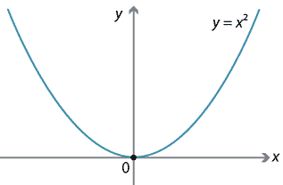

Roots of a function
-
A root or zero of a function f(x) is a solution of the equation f(x)=0
-
Some functions can be solved in closed form i.e., their solutions can be represented in terms of functions that we know.
- f(x)=x2−1 can be factored to (x−1)(x+1), with the solution of f(x)=0 being x=−1,1
-
For the functions that cannot be factored or represented in closed form, we must use numerical methods to find their roots.
- See this post for a discussion on “closed form”.
-
In general, finding roots numerically involves a procedure which generates a sequence of approximations x1,x2,...,xn until we obtain a value close to the actual root.
-
Note that we will focus on finding the real roots to functions, not the complex roots
Single and double roots

- The equation f(x)=0 has a single root for each x-intercept i.e. each time the function f(x) crosses X-axis
- Double roots (two equal roots) occur when f(x) touches but does not cross the X-axis
For example, f(x)=x2 has a double root at x=0
Methods of finding roots
-
All the methods we will see require an initial estimate of the root — either a single number as an estimate or an estimated interval containing the root.
-
Few different ways of estimating an initial root value or interval:
- If the equation is associated with a physical problem its physical context may suggest the estimate.
- A search can be carried out for estimated root values.
- The function could be plotted (a visual procedure).
We will see the following methods in this lecture:
- Bisection method
- Secant method
- Newton-Raphson method
Intermediate value theorem

(We will assume that all functions are continuous for root finding algorithms.)
- Let f(x) be a continuous function on the interval [a,b] and let s be a number where f(a)<s<f(b), then there exists at least one x with f(x)=s.
We will use Intermediate value theorem in some of the root-finding methods.
- The main idea is that
- If f(a) and f(b) have opposite signs, e.g. f(a)<0<f(b), then there is at least one x in the interval [a,b] such that f(x)=0 i.e. there exists a root in [a,b]
- Note that since a double root does not lead to a change in sign, it won’t be detectable using this method.
Checking if an interval contains a root
Given a function f(x) which is continuous in the interval [a,b], if f(a) and f(b) have opposite signs, we have a root in [a,b]
1def f(x):2 return x ** 2 - 2534a1, b1 = [-4.0, 3.0]5print('Is root in [-4.0, 3.0]?', f(a1) * f(b1) < 0)6# False78a2, b2 = [3.0, 10.0]9print('Is root in [3.0, 10.0]?', f(a2) * f(b2) < 0)10# True
Example
In the previous graph,
- Since we have tan function, which is not continuous, there are sign changes at discontinuities, e.g. in interval [1,2].
- So the theorem doesn’t work here and we can’t use the root finding methods in the interval [1,2].
- But we can find root in the interval [6,7].
Bisection method
-
It is the simplest root finding algorithm which can be applied to any continuous function f(x) on an interval [a,b] where a root exists i.e. f(a) and f(b) have different signs.
-
Therefore, the method relies on Intermediate value theorem.
-
The general idea is to repeat the following
- Divide the interval in two subintervals, one of which must contain the root.
- Select the subinterval [an,bn] where f(x) changes sign i.e. f(an)⋅f(bn)<0
Algorithm
-
Choose an interval [a0,b0] where sign of f(x) changes i.e. f(a0)⋅f(b0)<0
-
Compute f(m0) for the midpoint m0=2a0+b0
-
Determine the next subinterval [a1,b1] as follows:
- If f(a0)⋅f(m0)<0, then [a1,b1]=[a0,m0]
- If f(m0)⋅f(b0)<0, then [a1,b1]=[m0,b0]
-
Repeat steps (2) and (3) until the interval [an,bn] is small enough, i.e. its size is less than some value ϵ
-
Return the midpoint value mn=2an+bn
To visualize this algorithm download visualize_bisection.py from Ed and run it.
Python implementation
Check bisection function in rootfinding.py file.
Example
There is a double root at x=2 and a single root at x=4.
Check Bisection method example in rootfinding_example.py file.
Secant Method
- A secant line is a straight line joining at least two points on a function.

-
The secant method is very similar to the bisection method.
-
Instead of choosing the midpoint, the secant method divides each interval [a,b] by the x-intercept of the secant line connecting the endpoints (a,f(a)) and (b,f(b)).
-
However, unlike Bisection method, Secant method does not require that a root be present in the interval [a,b]. So the Secant method may not converge to any number.
Formula for Secant line
-
Let f(x) be a continuous function on a closed interval [a,b] such that f(a)⋅f(b)<0
-
The secant line connecting the endpoints (a,f(a)) and (b,f(b)) is given by
y=b−af(b)−f(a)(x−a)+f(a) -
By setting y=0 in above equation, we get the x-intercept of secant line as follows:
x=a−f(a)f(b)−f(a)b−a
Algorithm for Secant method
- Choose an interval [a0,b0] where sign of f(x) changes i.e. f(a0)⋅f(b0)<0.
- Compute f(x0) where x0 is the x-intercept of secant line between (a0,f(a0)) and (b0,f(b0)) given by
x0=a0−f(a0)f(b0)−f(a0)b0−a0
- Determine the next subinterval [a1,b1] as follows:
- If f(a0)⋅f(x0)<0, then [a1,b1]=[a0,x0]
- If f(x0)⋅f(b0)<0, then [a1,b1]=[x0,b0]
- Repeat steps (2) and (3) until the interval [an,bn] is small enough or some fixed number of steps have been taken.
- Return the value xn, the x-intercept of nth subinterval.
To visualize this algorithm download visualize_secant.py from Ed and run it.
Python implementation
Check secant function in rootfinding.py file.
Check Secant method example in rootfinding_example.py file.
Newton-Raphson method
-
Simple, fast, and best-known method of finding roots.
-
It uses derivative of the function f(x) i.e. tangent line.
-
So, it can only be used if the function is differentiable in the given interval.
-
If it is costly to compute the derivative, Newton’s method will be slow.
-
-
It doesn’t need an interval as an initial estimate, but only one estimate value x0.
-
We start with an approximation of the root, x0 and compute successive approximations as follows:
xn=xn−1−f′(xn−1)f(xn−1) -
The above formula comes from Taylor series approximation of f(xn) given by:
f(xn)≈f(xn−1)+f′(xn−1)(xn−xn−1)- Setting f(xn) to 0 and solving for xn would give the above formula for xn.
-
This method may not converge. To prevent an infinite loop, we use a fixed number of iterations, and stop if we do not find a root.
To visualize this algorithm download visualize_newton.py from Ed and run it.
Python implementation
Check newton_raphson function in rootfinding.py file.
For Newton-Raphson we also need the first derivative of the function. For the exampl we have,
Check the example in rootfinding_example.py file.
Newton-Raphson divergence examples

Although the Newton–Raphson method converges fast near the root, its global convergence characteristics are poor.
| Method | Assumptions | Convergence | Can find Double roots? |
|---|---|---|---|
| Bisection | f is continuous, root exists in the initial interval | Yes | No |
| Secant | f is continuous, root need not exist in the initial interval | Not guaranteed but will converge if root is close to initial interval. | Not guaranteed. |
| Newton-Raphson | f is continuous and differentiable | Not guaranteed, but will converge if initial estimate is close to root. | Yes but may converge slowly. |
Speed of convergence (single root): Newton-Raphson > Secant > Bisection
Root-finding using Scipy
Check the file scipy_rootfinding.py.